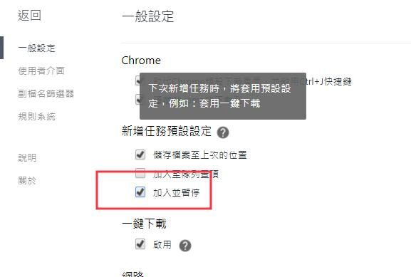
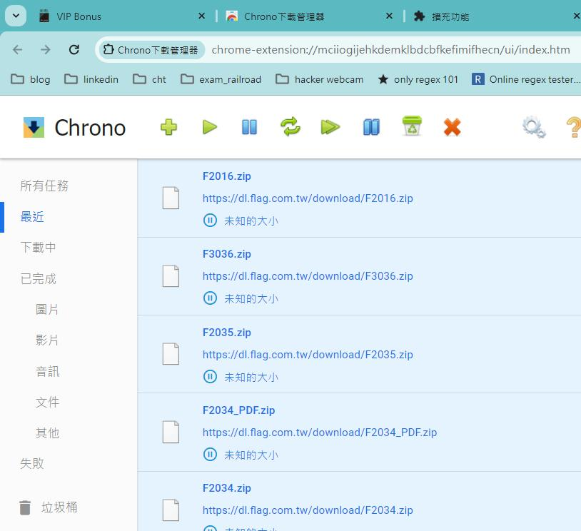
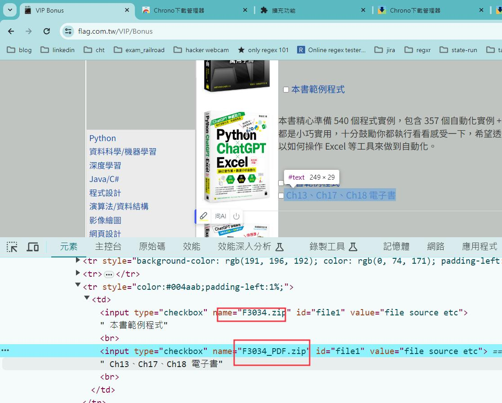
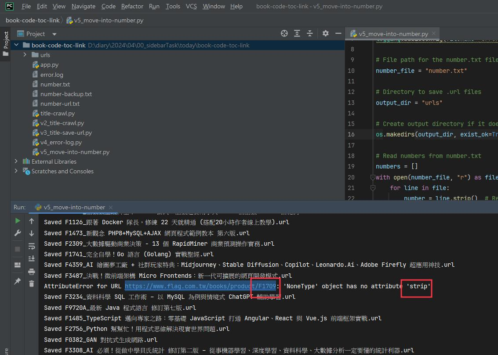

17-01-27_book-code-toc-link
想要去研究一下，到底什麼是沒有書本的情況？因為其實我們接下來可能會有很多沒有書籍的情況，就是只有免費資源的。那當時是因為有一本書就想說，當時是不是有找到他的就是相關的書籍原始碼範例嗎？
然後就覺得，這本書我明明就有啊，但是就是沒有找到，那就代表說我是不是要重新做一次。
因為我們需要的，其實仔細觀察一下這本書的架構，就是會有編號的話，就是會有書籍的鏈接以及他的相對應的原始碼範例。
然後就以這個編號作為出發點，然後得到所有相關鏈接的所有資訊。
那當時就就成功了。然後想到說要下載這麼多範例，檔案太大了。而且。我之前已經有下載過很多了，所以我只是要針對重複的，如果是有重複的，我就不想再下載。
所以這個題目，在收集的說明方面就比較得到。在書籍方面的說明方面已經得到相對應的網址就只剩下了那些沒有整理好的。嘗試連結而已。因為這些東西屬於大對，然後你讀幾本自己也不知道。
過程當中呢就。就是遇到一些問題啊。首先，因為程序的檔案還蠻大的，所以我們也開始在想說研究要怎麼然後暫停。但是後來我們後來採用的是一個一個下載的方式，所以就不需要了。然後。因為每一個編號都會對應到一個標題，然後這個標題的名稱未必是正規化的，未必適合當作檔案名稱，所以還要去進行判斷這些標題是不是有問題的，有問題的話還要再進行處理，挑選出的問題那一個。
pause-for-too-many-download

pause-download-list

number+zip

crap-title
